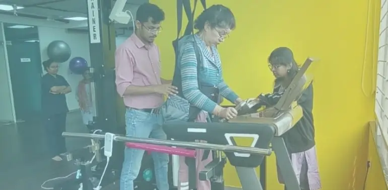
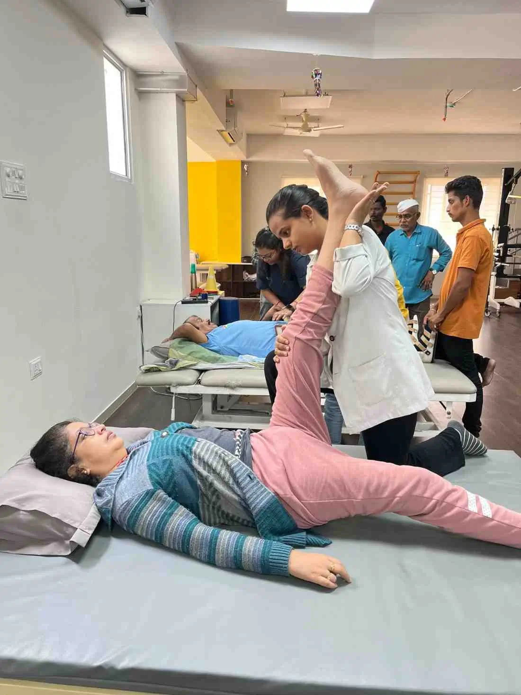

Physiotherapy Rehab Centre Near Me
Your Path to Recovery in Pune

Patients
Helped
Therapy
Hours Provided
Neurological
Conditions Treated
Client
Satisfaction

Discover Comprehensive Physiotherapy Rehabilitation in Pune
Are you searching for a physiotherapy rehab centre near me that offers advanced, personalized care? Look no further than Apricot Care Assisted Living and Rehabilitation, Pune's leading neurological rehabilitation and assisted living facility.
We understand the challenges of recovering from neurological conditions, injuries, or post-operative procedures. Our mission is to provide holistic, patient-centric care that empowers you to regain independence, improve mobility, and enhance your overall quality of life. With a dedicated team of expert physiotherapists and state-of-the-art technology, we are committed to being your trusted partner on your journey to recovery.
Why Choose a Specialized Physiotherapy Rehab Centre?
Choosing the right rehabilitation centre is crucial for effective recovery. Unlike general physiotherapy clinics, a specialized neuro rehabilitation centre like Apricot Care Assisted Living and Rehabilitation focuses on the intricate needs of patients with neurological disorders.
Our programs are designed to address complex conditions such as stroke, Parkinson's disease, spinal cord injuries, and more, ensuring a targeted and comprehensive approach to your healing. We combine evidence-based practices with innovative therapies to deliver superior outcomes, helping you achieve milestones you might have thought impossible.
Our Holistic Approach to Physiotherapy & Neuro Rehabilitation
At Apricot Care Assisted Living and Rehabilitation, we believe in treating
the whole person, not just the
symptoms.
Our holistic approach integrates various therapeutic modalities to ensure a well-rounded
recovery.
We recognize that each patient's journey is unique, which is why we emphasize personalized
care plans tailored to your specific needs, goals, and medical history.
A Multidisciplinary Team at Your Service
Our strength lies in our multidisciplinary team of highly qualified professionals. This includes:
Expert Physiotherapists:
Specializing in neurological and orthopedic rehabilitation, our physiotherapists utilize advanced techniques to restore movement, reduce pain, and improve function.
Occupational Therapists:
Focused on helping you regain independence in daily activities, from self-care to vocational tasks.
Speech Therapists:
Addressing communication and swallowing difficulties often associated with neurological conditions. .
Dietitians and Nutritionists:
Providing essential dietary guidance to support your recovery and overall health.
Counsellors:
Offering emotional and psychological support to help you cope with the challenges of rehabilitation.
This collaborative approach ensures that every aspect of your recovery is meticulously managed, providing you with comprehensive support under one roof. Our team regularly collaborates to review your progress and adjust your treatment plan, ensuring optimal results.
Advanced Technology and Equipment for Superior Outcomes
We are proud to incorporate cutting-edge technology into our
rehabilitation programs.
Our physiotherapy rehab centre in Pune is equipped with modern tools
and
devices that accelerate recovery and enhance therapeutic effectiveness. This includes:
ROBOTIC NEURO REHABILITATION:
Utilizing advanced robotics to assist with motor relearning, gait training, and strengthening exercises, particularly beneficial for stroke and spinal cord injury patients.
Treadmill Therapy with Body Weight Support:
Facilitating early mobilization and gait training in a safe and controlled environment.
Virtual Reality (VR) Therapy:
Engaging patients in interactive exercises that improve balance, coordination, and cognitive function
Electrotherapy Modalities:
Such as TENS, Ultrasound, and IFT, used for pain management and tissue healing.
Biofeedback Systems:
Providing real-time feedback on muscle activity to help patients gain better control over their movements.
Personalized Treatment Plans: Your Unique Path to Recovery
At Apricot Care Assisted Living and Rehabilitation, there's no one-size-fits-all solution. Every patient receives a meticulously crafted, personalized treatment plan. Our process begins with a thorough assessment of your condition, functional limitations, and personal goals. Based on this assessment, our team designs a customized program that may include a combination of:
Manual Therapy
Hands-on techniques to mobilize joints, reduce muscle stiffness, and alleviate pain.
Therapeutic Exercises
Targeted exercises to improve strength, flexibility, balance, and endurance.
Gait and Balance Training
Specialized programs to enhance walking ability and prevent falls.
Activities of Daily Living (ADL) Training
Practical sessions to help you perform everyday tasks independently.
Pain Management Strategies
Integrating various techniques to effectively manage and reduce chronic or acute pain.
Your progress is continuously monitored, and your treatment plan is adjusted as you advance, ensuring that you are always challenged appropriately and moving towards your recovery goals. This adaptive approach is a cornerstone of our success as a leading physiotherapy rehab centre near me.

Conditions We Treat: Specialized Care for Diverse Needs
Our neuro rehabilitation centre specializes in a wide range of conditions, offering expert care for both neurological and orthopedic challenges. We are equipped to handle complex cases, providing hope and tangible results for our patients.
What We’re Offering
Orthopedic & Musculoskeletal Rehabilitation
Premier care for faster recovery, pain relief, and restored movement.
Tailored for post-surgery, sports injuries, joint and chronic pain management in Pune.
Post-Surgery Rehabilitation
Essential programs for recovery after orthopedic surgeries such as joint replacements (knee, hip, shoulder), ACL reconstruction, and spinal surgeries.
Sports Injuries
Diagnosis and treatment of common sports-related injuries, focusing on rapid recovery and safe return to activity.
Chronic Pain Management
Comprehensive strategies to alleviate chronic back pain, neck pain, joint pain, and other persistent discomforts.
Joint Pain (Knee, Shoulder, Back)
Targeted therapies to reduce pain, improve range of motion, and strengthen supporting muscles.
Our Comprehensive Services: Beyond Traditional Physiotherapy
Apricot Care Assisted Living and Rehabilitation offers a broad spectrum of services designed to support every stage of your recovery and enhance your daily living.
Core Physiotherapy Services
- Exercise Therapy: Customized exercise regimens focusing on strength, flexibility, balance, and endurance.
- Gait and Balance Training: Specialized programs to improve walking patterns, stability, and reduce the risk of falls.
- Pain Management: Multi-modal approach to chronic and acute pain, incorporating physical therapies, modalities, and education.
Specialized Neuro Rehabilitation
- Cognitive Rehabilitation: Exercises and strategies to improve memory, attention, problem-solving, and other cognitive functions.
- Motor Relearning Program: Intensive training to re-establish normal movement patterns after neurological damage.
Occupational Therapy
- ADL Training: Practical guidance and exercises for self-care activities like dressing, bathing, and eating.
- IADL Training: Support for complex tasks such as cooking, managing finances, and using public transportation.
- Adaptive Equipment Training: Instruction on using assistive devices to enhance independence.
Extended Care & Support
- Speech Therapy: For individuals with communication or swallowing disorders.
- Home Care Services: Rehabilitation delivered directly to your home.
- Online Therapy (Tele-rehabilitation): Convenient virtual sessions for ongoing support, especially for those with mobility challenges or living in remote areas.
These comprehensive services ensure that all your rehabilitation needs are met, making Apricot Care Assisted Living and Rehabilitation a truly all-encompassing rehabilitation centre in Pune.
Why Apricot Care Assisted Living and Rehabilitation Stands Out: Your Best Choice for Rehabilitation in Pune
Choosing Apricot Care Assisted Living and Rehabilitation means choosing excellence, compassion, and proven results. We are dedicated to providing the highest standard of care, making us the preferred physiotherapy rehab centre in Pune.
Our team comprises highly experienced and certified physiotherapists, occupational therapists, and other specialists. Each member is committed to continuous learning and staying abreast of the latest advancements in rehabilitation science. Their expertise, coupled with genuine empathy, creates a supportive and effective healing environment.
Our modern facility is designed to optimize your recovery. From spacious therapy gyms to private treatment rooms and advanced rehabilitation equipment, every aspect of our centre is geared towards providing a comfortable, safe, and stimulating environment for healing. We maintain strict hygiene standards and ensure accessibility for all patients.
Nothing speaks louder than the success of our patients. We are proud of the countless individuals who have regained their independence and improved their quality of life through our programs. Our website features numerous testimonials from patients and their families, sharing their positive experiences and the transformative impact of Apricot Care Assisted Living and Rehabilitation. These stories highlight our commitment to delivering tangible results and fostering a hopeful environment.
Located centrally in Pune, Apricot Care Assisted Living and Rehabilitation is easily accessible, making it a convenient choice for those searching for a physiotherapy rehab centre near me. We understand the importance of proximity during rehabilitation, and our accessible location ensures that you can attend your sessions without unnecessary travel burden. We also provide clear directions and parking information to make your visits stress-free.
We strive to make quality rehabilitation accessible. We work with a variety of insurance providers and offer flexible payment options. Our administrative team is available to assist you with insurance claims and provide detailed information on costs, ensuring transparency and peace of mind.
As we age, maintaining strength, balance, and mobility is key to preserving independence and quality of life.
- Focus Areas: Fall prevention programs, arthritis management, improving walking endurance and safety, and maintaining functional independence for daily activities.


our service
Our Comprehensive Care and Support Services
.webp)
.webp)
-(1).webp)
24/7 Nursing and Medical Supervision
At Apricot Care Assisted Living and Rehabilitation, we provide 24/7 nursing support to ensure that you receive continuous care and medical monitoring. Whether you're staying in our facility or recovering at home, our trained nurses and medical staff are always available to address your needs, ensuring a safe and secure environment throughout your recovery journey.
.webp)
.webp)
.webp)
.webp)
.webp)
.webp)
.webp)
.webp)
.webp)
.webp)
.webp)
.webp)